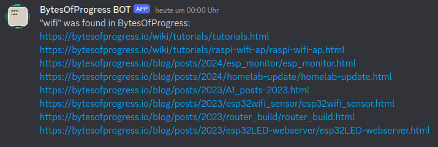

BytesOfProgress
BOP Discord Bot
28th April 2024 / 11:00 PM
BytesOfProgress now has a Discord Bot! It can perform searches for topics on BOP with given keyword queries.
Command examples: "/BOP wifi", "/bop wifi"
Click on the button below to add it to your Discord server:
Add Bot!My first intention was to make the bot search for keywords over https with the python module named "requests" and then parse the HTML with BeautifulSoup to learn about web-scraping. After I got it to work this way, I recognized that it was way too slow: It took almost a minute to process a query and search through the whole website before giving the user results. Because of this I decided to rewrite it to make it search through the files themselves rather than via https. This shortened the time from receiving a query to sending results back to the user from almost a minute to under a second!
For some odd reason I can't figure out how to start the bot automatically after a reboot. I made a cronjob that tries to start it, but the python file can't resolve the hostname "discord.com", when it's not started manually. So for now, I'm going to stick with restarting the bot manually after every reboot of the webserver (which also runs the discord bot).
10th May 2024 / 09:00 AM
Update: Why did the bot not work when it was launched automatically?
When the cronjob responsible for starting the discord bot was executed at reboot, it executed the python file before the networking on the server started. After I added a 5 second delay to the cronjob, it starts up properly after every reboot.
back